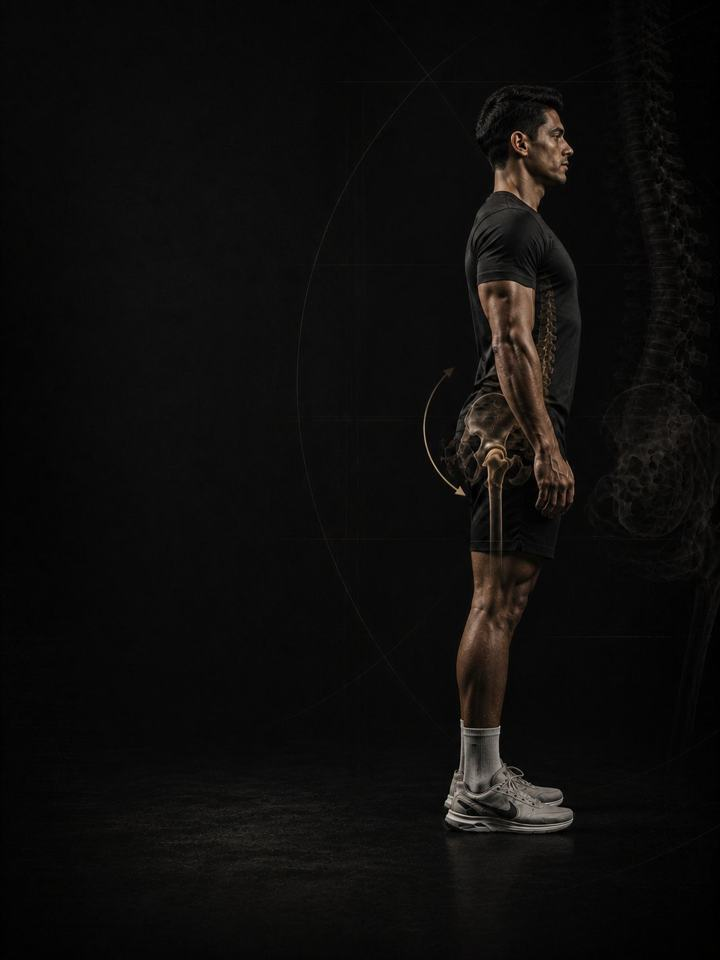

الميلان الأمامي للحوض
ضع القفص الصدري فوق الحوض على خط واحد، بإطالة الجهة الأمامية من الجسم وبناء الجهة الخلفية.
- مناسب لـكل من لديه تقوّس في أسفل الظهر يؤلمه خلال أيام الجلوس أو الوقوف الطويلة
- الجدولروتين يومي مدته 10–15 دقيقة، و3 أيام قوة في الأسبوع
- المعداتالروتين اليومي يحتاج إلى سجادة وشريط مطاطي. أيام القوة تحتاج إلى نادٍ متكامل.
- الصيغةملف PDF للهاتف، وكل تمرين مرتبط بفيديو توضيحي
لماذا يبدأ الظهر المقوّس بالألم
يميل الحوض إلى الأمام، ويتقوّس أسفل الظهر أكثر من اللازم، وترتفع الأضلاع وتبرز إلى الخارج. إنها الوضعية التي يعرفها الناس فورًا: الظهر المقوّس والبطن البارز للأمام، حتى عند الشخص النحيف. وهي أيضًا الوضعية التي يتحدّث عنها الإنترنت بأكبر قدر من الثقة، ومعظم هذه الثقة في غير محلّها.
التقوّس الظاهر ليس تشخيصًا، ولا تكفي أي كمية من إطالة مثنيات الورك وحدها لإصلاحه. قدرٌ من الميلان الأمامي طبيعي، ونطاقه بين الأشخاص الأصحاء الذين لا يشكون من ألم أوسع بكثير مما يعترف به معظم المحتوى المتعلق بالقوام. السؤال ليس حجم التقوّس في صورة، بل هل تستطيع تسطيحه عندما تريد، وهل يؤدّي الظهر عملًا توقّف الوركان والجذع عن أدائه.
ما يسبّب الأعراض هو اجتماع ثلاثة أمور: جهة أمامية قصرت بسبب يوم كامل من الجلوس، وجهة خلفية توقّفت عن المساهمة، وقفص صدري فقد موضعه فوق الحوض. يدرّب هذا البرنامج الجوانب الثلاثة، بالترتيب الذي ينجح فعلًا.
أسبوعك
روتين يومي قصير، وثلاثة أيام قوة في النادي. أي ثلاثة أيام تصلح، ما دامت غير متتالية. هذا مثال واحد:
| الأحد | الاثنين | الثلاثاء | الأربعاء | الخميس | الجمعة | السبت |
|---|---|---|---|---|---|---|
| اليوم 1 + الروتين اليومي | الروتين اليومي | اليوم 2 + الروتين اليومي | الروتين اليومي | اليوم 3 + الروتين اليومي | الروتين اليومي | الروتين اليومي |
كيف يسير البرنامج:
- الاختبار أولًا. أربعة اختبارات قبل الأسبوع 1، تُعاد بعد الأسبوعين 3 و6.
- الروتين اليومي، 10–15 دقيقة. سبع حركات، كل يوم. وفي أيام القوة يُعدّ هو الإحماء أيضًا.
- أيام القوة. اليوم 1 ثم 2 ثم 3، بالترتيب، مع التركيز على السلسلة الخلفية (الأرداف، والعضلات الخلفية للفخذ، والظهر) والجذع.
الأنماط الخمسة وراء معظم آلام الميلان الأمامي للحوض
هذه الأنماط الخمسة هي التي تحوّل انحناءً طبيعيًا إلى انحناء مؤلم. ومعظم الناس يجدون أنفسهم في أكثر من نمط واحد. يدرّب البرنامج الأنماط الخمسة معًا، فلا تحتاج إلى تشخيص دقيق لتبدأ.
-
قِصر مثنيات الورك وتيبّسها. اجلس ثماني ساعات، وستقضي العضلات في مقدّمة الورك ثماني ساعات وهي قصيرة. وهي تتّصل بمقدّمة الحوض وبالعمود الفقري، فإذا توقّفت عن الاستطالة سحبت الحوض إلى ميلان أمامي وأبقته فيه. في البرنامج: إطالة الكنبة، انسيابية الورك 90-90، الطعنة الخلفية
-
خمول الأرداف والعضلات الخلفية للفخذ. تسحب الأرداف والعضلات الخلفية للفخذ مؤخرة الحوض إلى الأسفل، وهذا ما يجعله مستويًا. وعندما تخمل لا يبقى ما يقاوم الجهة الأمامية، والمفصلة التي ينبغي أن تأتي من الورك يأخذها أسفل الظهر بدلًا منه. في البرنامج: دفع الورك، الرفعة الرومانية، جهاز ثني الركبة النوردي
-
بروز الأضلاع وضعف الجذع العميق. يحافظ الجذع العميق على القفص الصدري فوق الحوض على خط واحد. وإذا فقدته ترتفع الأضلاع وتبرز، ويختلّ اصطفاف الحجاب الحاجز مع قاع الحوض، ويصبح أسفل الظهر وحده ما يبقيك منتصبًا. في البرنامج: الحشرة الميتة، تنفّس 90-90، ضغط بالوف
-
الإفراط في عمل عضلات أسفل الظهر. تتولّى العضلات الطويلة على جانبي أسفل الظهر العمل الذي تخلّى عنه الوركان والجذع. فتشعر بها مشدودة ومنتفخة على الدوام، لأنها تعمل حتى وأنت واقف دون حركة. في البرنامج: تنفّس 90-90 لإعادة الضبط، وضعية الطفل، الرفعة الرومانية
-
الوقوف معلّقًا على المفاصل. الوركان مدفوعان للأمام، والأضلاع مائلة للخلف، والركبتان مقفلتان: استناد على الأربطة بدلًا من العضلات. لا يكلّفك ذلك شيئًا لدقيقة، لكنه يكلّفك الكثير على امتداد يوم، ويعيد تعليم النمط أسرع مما يستطيع التمرين إصلاحه. في البرنامج: الوقوف المتّزن، تمارين الحمل، إعادة الضبط اليومية
تمارين نمطك الإضافية. يذكر ملف PDF تمارين إضافية لكل نمط. اختر نمطين على الأكثر من الأنماط الأقرب إليك، وأضف تمارينهما في نهاية كل يوم قوة، 3 مجموعات لكل تمرين. في النمط 5، التمارين الإضافية هي حمل الحقيبة وحمل المزارع، مع قواعد الوقوف المتّزن كل يوم.
كيف تتقدّم الأسابيع الـ6
الروتين اليومي يبقى كما هو طوال الأسابيع الستة. وأيام القوة تنتقل مستوى أعلى كل أسبوعين.
| الأسبوعان 1–2 | الأسبوعان 3–4 | الأسبوعان 5–6 | |
|---|---|---|---|
| المرحلة | التحكّم | البناء | الدمج |
| التركيز | التحكّم والتنفّس | مفصلة الورك بالحمل وتمارين الأرداف | قوة متكاملة تحت وزن حقيقي |
| المجموعات الفعلية أسبوعيًا | 54 | 57 | 60 |
يرتفع متوسط الجهد من نحو 6/10 في الأسبوعين 1–2، إلى 6.4 في الأسبوعين 3–4، و7.3 في الأسبوعين 5–6. هذا المقياس هو الجهد (RPE)، أي تقييم من 1 إلى 10 لمدى صعوبة المجموعة: «جهد 6/10» يعني أنه يتبقى في الخزان نحو 4 تكرارات، و«جهد 7.3/10» نحو 2 إلى 3.
القواعد التي تجعله ينجح
- يزداد العمل كلما استحقّت الوضعية ذلك. التحكّم والتنفّس أولًا، ثم مفصلة الورك بالحمل، ثم القوة تحت وزن حقيقي. كل مرحلة مدتها أسبوعان.
- الروتين اليومي هو العلاج، وأيام القوة هي التمرين. الروتين لا يتغيّر، حتى يؤدّي دوره كل يوم.
- استمر في التمرين. في ملف PDF بدائل للرفعات التي تكافئ التقوّس، فلا تضطر إلى إيقاف كل شيء بينما تتغيّر الوضعية.
- القرارات تتبع الأرقام. تعيد الاختبار بعد الأسبوعين 3 و6.
كيف تقيس تقدّمك
أربعة اختبارات قبل الأسبوع 1، ثم مرة أخرى بعد الأسبوعين 3 و6، تسجّلها في جدول النتائج في ملف PDF. والاختبارات الأربعة هي: اختبار توماس، واختبار الاصطفاف على الحائط، ولمس أصابع القدمين، والتحكّم في الحشرة الميتة.
شكل التقدّم الجيد
- الأسبوعان 1–2: يخفّ الألم أثناء الوقوف، وتبدأ الفجوة عند الحائط بالانغلاق عندما تريد.
- الأسبوعان 3–4: تشعر بأن المفصلة تأتي من الوركين، ويرتفع عدد تكرارات الحشرة الميتة.
- الأسبوعان 5–6: تستطيع الحفاظ على وضعية متّزنة تحت الحمل دون أن تفكّر فيها.
إذا لم يتغيّر شيء عند إعادة الاختبار في الأسبوع 3، فاحصل على تقييم من مختص بدلًا من الضغط أكثر.
معيار الإنهاء في الأسبوع 6: ألم 2/10 أو أقل في أسفل الظهر خلال يوم عادي، وثمانية تكرارات متحكَّم فيها من الحشرة الميتة لكل جهة مع إبقاء الأضلاع للأسفل، واصطفاف على الحائط تستطيع إغلاق فجوته عندما تريد، ومفصلة تأتي من الوركين.
قف متّزنًا
الميلان يترسّخ في الساعات الثماني التي تسبق النادي، لا في الساعة التي تقضيها فيه. قف بالعضلات بدلًا من الأربطة: الأضلاع للأسفل، والوزن في منتصف القدم، والركبتان مرنتان، والأرداف مشدودة قليلًا. في أيام العمل المكتبي، اضبط تذكيرًا كل ساعة. قف، وأخرج الزفير كاملًا، واشعر بالأضلاع تنزل، وامشِ ثلاثين ثانية. وحافظ أيضًا على مسكّنَين مجانيين: 7–9 ساعات من النوم، والتحكّم في التوتر.
الأدلة العلمية
كل برنامج في المكتبة مبني على أبحاث منشورة، وقوة تلك الأبحاث مذكورة صراحةً لا ضمنًا. وحيث تكون الأدلة محدودة، تقول الصفحة ذلك.
| النتيجة | المصدر | ما لا تُظهره |
|---|---|---|
| تدريب القوة يخفض الإصابات الرياضية إلى أقل من ثلث معدلها في المجموعة الضابطة. أما الإطالة فلا تخفضها. | Lauersen, Bertelsen & Andersen, British Journal of Sports Medicine 2014. Meta-analysis of 25 randomised trials, 26,610 participants. PMID 24100287 | نسبة الخطر 0.32 لتدريب القوة و0.96 للإطالة. تفاوتت التجارب كثيرًا، ولم تكن الجرعة موحّدة. |
| البرامج التي تتضمّن تمرين نورديك للعضلات الخلفية للفخذ تخفض إصابات العضلات الخلفية للفخذ إلى النصف تقريبًا. | van Dyk, Behan & Whiteley, British Journal of Sports Medicine 2019. Meta-analysis, 15 studies, 8,459 athletes. PMID 30808663 | نسبة الخطر 0.49. وهي تقيس البرامج التي تتضمّن التمرين، لا التمرين وحده. |
| أي وصفة تدريب معقولة أفضل من عدم التدريب. الأحمال الأثقل تحتل المرتبة الأعلى للقوة. | Currier, McLeod, Banfield et al., British Journal of Sports Medicine 2023. Network meta-analysis, 178 strength and 119 hypertrophy studies. PMID 37414459 | كانت الفروق بين الوصفات صغيرة، وكلها نجحت. |
| تستمر القوة في التحسّن كلما زادت المجموعات الأسبوعية، مع تناقص العائد. والتمرين بعدد مرات أكبر في الأسبوع يفيد القوة بشكل ثابت. | Pelland, Remmert, Robinson, Hinson & Zourdos, Sports Medicine 2025. Meta-regressions, 67 studies, 2,058 participants (79% male). PMID 41343037 | طريقة احتساب المجموعات (مباشرة أو غير مباشرة) تغيّر الأرقام كثيرًا. |
ماذا بعد
بعد 6 أسابيع:
- أسفل الظهر ما زال يشتكي: آلام أسفل الظهر
- ابنِ القوة والعضلات: القوة الأساسية
- تدرّب كرياضي: التطوير الرياضي
- منطقة أخرى تحتاج إلى عمل: السلسلة التصحيحية
قبل الشراء: احصل على موافقة طبية أولًا إذا
- كان لديك ألم في الصدر، أو ضيق تنفس غير معتاد، أو خفقان، أو دوخة أثناء المجهود.
- كان لديك ضغط دم مرتفع غير منضبط، أو مرض قلبي معروف، أو خضعت لعملية جراحية مؤخرًا.
- كنتِ حاملًا أو بعد الولادة بفترة قصيرة. احصلي على موافقة وبرنامج مخصص أولًا.
- بدأ الألم بإصابة محددة (صوت فرقعة، أو انهيار المفصل، أو تورم خلال ساعات)، أو لديك تنميل أو ضعف أو حرارة أو ألم يوقظك ليلًا.
هذا البرنامج إرشاد عام للياقة البدنية، ولا يغني عن التقييم الطبي.